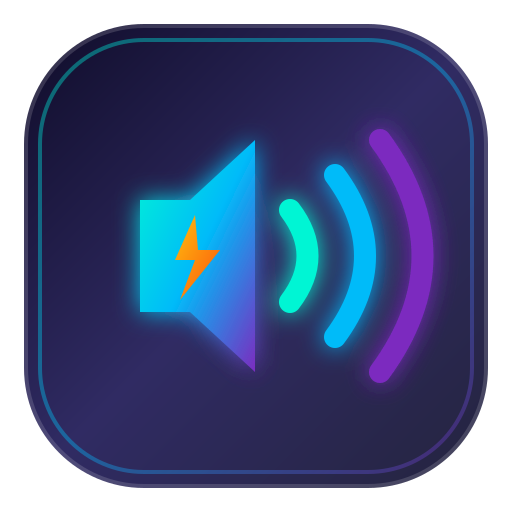

Volume Booster
PRO 800%
Ultimate Sound & Equalizer
Settings & Preferences
Dark Theme (OLED Glass)
Invert Mouse Wheel Direction
Cycle Profiles Shortcut
Diagnostics:
100
%
Standard Output
800
0
0%
100%
200%
400%
600%
800%
Mute
100%
200%
400%
600%
800%
Reset to default
Restore:
100
% for
Equalizer Profiles
Default
Voice Clarity
Bass Boost
Algorithm:
highpass
peaking
lowshelf
Frequency:
0
Hz
Q-Factor:
1
Gain:
0
dB
22.05 kHz
22.05 kHz
Tabs Playing Audio